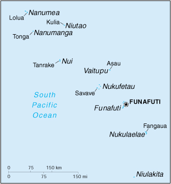

{kind=link}


| Tuvalu |
|
|  | |
| Introduction |
Background: In 1974, ethnic differences within the British colony of the Gilbert and Ellice Islands caused the Polynesians of the Ellice Islands to vote for separation from the Micronesians of the Gilbert Islands. The following year, the Ellice Islands became the separate British colony of Tuvalu. Independence was granted in 1978. In 2000, Tuvalu negotiated a contract leasing its Internet domain name ".tv" for $50 million in royalties over the next dozen years.
| Geography |
Location: Oceania, island group consisting of nine coral atolls in the South Pacific Ocean, about one-half of the way from Hawaii to Australia
Geographic coordinates: 8 00 S, 178 00 E
Map references: Oceania
Area:
total:
26 sq km
land:
26 sq km
water:
0 sq km
Area - comparative: 0.1 times the size of Washington, DC
Land boundaries: 0 km
Coastline: 24 km
Maritime claims:
contiguous zone:
24 nm
exclusive economic zone:
200 nm
territorial sea:
12 nm
Climate: tropical; moderated by easterly trade winds (March to November); westerly gales and heavy rain (November to March)
Terrain: very low-lying and narrow coral atolls
Elevation extremes:
lowest point:
Pacific Ocean 0 m
highest point:
unnamed location 5 m
Natural resources: fish
Land use:
arable land:
0%
permanent crops:
0%
permanent pastures:
0%
forests and woodland:
0%
other:
100% (1993 est.)
Irrigated land: NA sq km
Natural hazards: severe tropical storms are usually rare, but, in 1997, there were three cyclones; low-level of islands make them very sensitive to sea-level rise
Environment - current issues: since there are no streams or rivers and groundwater is not potable, most water needs must be met by catchment systems with storage facilities (the Japanese Government has built one desalination plant and plans to build one other); beachhead erosion because of the use of sand for building materials; excessive clearance of forest undergrowth for use as fuel; damage to coral reefs from the spread of the Crown of Thorns starfish; Tuvalu is very concerned about global increases in greenhouse gas emissions and their effect on rising sea levels, which threaten the country's underground water table
Environment - international agreements:
party to:
Climate Change, Climate Change-Kyoto Protocol, Desertification, Endangered Species, Marine Dumping, Ozone Layer Protection, Ship Pollution
signed, but not ratified:
Biodiversity, Law of the Sea
| People |
Population: 10,838 (July 2000 est.)
Age structure:
0-14 years:
34% (male 1,872; female 1,802)
15-64 years:
61% (male 3,149; female 3,458)
65 years and over:
5% (male 239; female 318) (2000 est.)
Population growth rate: 1.41% (2000 est.)
Birth rate: 21.78 births/1,000 population (2000 est.)
Death rate: 7.66 deaths/1,000 population (2000 est.)
Net migration rate: 0 migrant(s)/1,000 population (2000 est.)
Sex ratio:
at birth:
1.05 male(s)/female
under 15 years:
1.04 male(s)/female
15-64 years:
0.91 male(s)/female
65 years and over:
0.75 male(s)/female
total population:
0.94 male(s)/female (2000 est.)
Infant mortality rate: 23.3 deaths/1,000 live births (2000 est.)
Life expectancy at birth:
total population:
66.32 years
male:
64.21 years
female:
68.53 years (2000 est.)
Total fertility rate: 3.11 children born/woman (2000 est.)
Nationality:
noun:
Tuvaluan(s)
adjective:
Tuvaluan
Ethnic groups: Polynesian 96%
Religions: Church of Tuvalu (Congregationalist) 97%, Seventh-Day Adventist 1.4%, Baha'i 1%, other 0.6%
Languages: Tuvaluan, English
Literacy:
definition:
NA
total population:
NA%
male:
NA%
female:
NA%
| Government |
Country name:
conventional long form:
none
conventional short form:
Tuvalu
former:
Ellice Islands
Data code: TV
Government type: constitutional monarchy with a parliamentary democracy; began debating republic status in 1992
Capital: Funafuti
Administrative divisions: none
Independence: 1 October 1978 (from UK)
National holiday: Independence Day, 1 October (1978)
Constitution: 1 October 1978
Legal system: NA
Suffrage: 18 years of age; universal
Executive branch:
chief of state:
Queen ELIZABETH II (since 6 February 1952), represented by Governor General Sir Tomasi PUAPUA (since 26 June 1998)
head of government:
Prime Minister Ionatana IONATANA (since NA April 1999) and Deputy Prime Minister Lagitupu (of Nanumea) TUILIMU (since NA April 1999)
cabinet:
Cabinet appointed by the governor general on the recommendation of the prime minister
elections:
the monarch is hereditary; governor general appointed by the monarch on the recommendation of the prime minister; prime minister and deputy prime minister elected by and from the members of Parliament; election last held 27 April 1999 (next to be held NA 2002)
election results:
Ionatana IONATANA elected prime minister; percent of Parliament vote - NA; Lagitupu (of Nanumea) TUILIMU elected deputy prime minister; percent of Parliament vote - NA
Legislative branch:
unicameral Parliament or Fale I Fono, also called House of Assembly (12 seats; members elected by popular vote to serve four-year terms)
elections:
last held 26-27 March 1998 (next to be held by NA 2002)
election results:
percent of vote - NA; seats - independents 12
Judicial branch: eight Island Courts; High Court; note - a chief justice visits twice a year to preside over sessions of the High Court
Political parties and leaders: there are no political parties but members of Parliament usually align themselves in informal groupings
International organization participation: ACP, AsDB, C (special), ESCAP, IFRCS (associate), Intelsat (nonsignatory user), ITU, Sparteca, SPC, SPF, UNESCO, UPU, WHO, WTrO (applicant)
Diplomatic representation in the US: Tuvalu does not have an embassy in the US
Diplomatic representation from the US: the US does not have an embassy in Tuvalu; the US ambassador to Fiji is accredited to Tuvalu
Flag description: light blue with the flag of the UK in the upper hoist-side quadrant; the outer half of the flag represents a map of the country with nine yellow five-pointed stars symbolizing the nine islands
| Economy |
Economy - overview: Tuvalu consists of a densely populated, scattered group of nine coral atolls with poor soil. The country has no known mineral resources and few exports. Subsistence farming and fishing are the primary economic activities. Government revenues largely come from the sale of stamps and coins and worker remittances. About 1,000 Tuvaluans work in Nauru in the phosphate mining industry. Nauru has begun repatriating Tuvaluans, however, as phosphate resources decline. Substantial income is received annually from an international trust fund established in 1987 by Australia, NZ, and the UK and supported also by Japan and South Korea. Thanks to wise investments and conservative withdrawals, this Fund has grown from an initial $17 million to over $35 million in 1999. The US government is also a major revenue source for Tuvalu, with 1999 payments from a 1988 treaty on fisheries at about $9 million, a total which is expected to rise annually. In an effort to reduce its dependence on foreign aid, the government is pursuing public sector reforms, including privatization of some government functions and personnel cuts of up to 7%. In 1998, Tuvalu began deriving revenue from use of its area code for "900" lines and from the sale of its ".tv" Internet domain name. Royalites from these new technology sources could raise GDP three or more times over the next decade. Low-lying Tuvalu is particularly vulnerable to any rise in the sea level from future global warming.
GDP: purchasing power parity - $7.8 million (1995 est.)
GDP - real growth rate: 8.7% (1995 est.)
GDP - per capita: purchasing power parity - $800 (1995 est.)
GDP - composition by sector:
agriculture:
NA%
industry:
NA%
services:
NA%
Population below poverty line: NA%
Household income or consumption by percentage share:
lowest 10%:
NA%
highest 10%:
NA%
Inflation rate (consumer prices): 3.9% (average 1985-93)
Labor force: NA
Labor force - by occupation: people make a living mainly through exploitation of the sea, reefs, and atolls and from wages sent home by those working abroad (mostly workers in the phosphate industry and sailors)
Unemployment rate: NA%
Budget:
revenues:
$4.3 million
expenditures:
$4.3 million, including capital expenditures of $NA (1989 est.)
Industries: fishing, tourism, copra
Industrial production growth rate: NA%
Electricity - production: 3 million kWh (1995)
Electricity - production by source:
fossil fuel:
NA%
hydro:
NA%
nuclear:
NA%
other:
NA%
Electricity - consumption: 3 million kWh (1995)
Electricity - exports: 0 kWh (1995)
Electricity - imports: 0 kWh (1995)
Agriculture - products: coconuts; fish
Exports: $165,000 (f.o.b., 1989)
Exports - commodities: copra
Exports - partners: Fiji, Australia, NZ
Imports: $4.4 million (c.i.f., 1989)
Imports - commodities: food, animals, mineral fuels, machinery, manufactured goods
Imports - partners: Fiji, Australia, NZ
Debt - external: $NA
Economic aid - recipient: $7.9 million (1995); note - substantial annual support from an international trust fund
Currency: 1 Tuvaluan dollar ($T) or 1 Australian dollar ($A) = 100 cents
Exchange rates: Tuvaluan dollars ($T) or Australian dollars ($A) per US$1 - 1.5207 (January 2000), 1.5497 (1999), 1.5888 (1998), 1.3439 (1997), 1.2773 (1996), 1.3486 (1995)
Fiscal year: calendar year
| Communications |
Telephones - main lines in use: 400 (1994)
Telephones - mobile cellular: 0 (1994)
Telephone system:
domestic:
radiotelephone communications between islands
international:
NA
Radio broadcast stations: AM 1, FM 0, shortwave 0 (1998)
Radios: 4,000 (1997)
Television broadcast stations: 0 (1997)
Televisions: NA
Internet Service Providers (ISPs): 1 (1999)
| Transportation |
Railways: 0 km
Highways:
total:
8 km (1996 est.)
paved:
NA km
unpaved:
NA km
Ports and harbors: Funafuti, Nukufetau
Merchant marine:
total:
8 ships (1,000 GRT or over) totaling 44,500 GRT/63,978 DWT
ships by type:
cargo 5, passenger/cargo 1, petroleum tanker 1, roll-on/roll-off 1 (1999 est.)
Airports: 1 (1999 est.)
Airports - with unpaved runways:
total:
1
1,524 to 2,437 m:
1 (1999 est.)
| Military |
Military branches: no regular military forces; Police Force includes Maritime Surveillance Unit for search and rescue missions and surveillance operations
Military expenditures - dollar figure: $NA
Military expenditures - percent of GDP: NA%
| Transnational Issues |
Disputes - international: none